AI 赋能
药学服务
收集到的 11 个核心问题
处方审核
AI能否审核处方与用药交代？
图片识别
图片信息OCR识别错误多
知识库搭建
让AI从资料库读取正确信息
科普视频
AI能否制作科普视频？
数字人
手捏数字人提示词怎么写？
文献检索
AI助力文献检索
病历数据
收集与分析方法
课题申报
申请书填报辅助
中英翻译
论文翻译需求
辅助选题
如·高血压管理方向
ML/预测
机器学习·模型预测
AI 怎么帮你干活
一个平台打底 · 一个知识库供血 · 两项技能干活
一个平台
WorkBuddy 桌面 AI 智能体
一个知识库
IMA 搜读写一体的 AI 工作台
两项技能
clinical-pharmacy + workbuddy-ars
WorkBuddy vs 其他 AI 工具
四个主流工具对比 · 信息截至 2026 年 6 月
| WorkBuddy | Trae Solo | Claude Code | Codex (桌面) | |
|---|---|---|---|---|
| 出品方 | 腾讯 | 字节跳动 | Anthropic | OpenAI |
| 上线时间 | 2026.3.9 | 2026.3.31（独立端） | 2025 年初 | 2026.2 Mac / 3 Win |
| 产品形态 | 桌面全场景助手 | 独立桌面端 + Web | CLI + 桌面 + IDE 扩展 | 桌面应用 (Win/Mac) |
| 国内直连 | ✅ 零配置 | ✅ 直连 | ❌ 需代理 | ❌ 需代理 |
| 费用 | 免费 | 免费 | $17-20/月 Pro | $20/月 Plus |
| 核心模式 | Craft / Plan / Ask | Code + MTC · 双模式 | 终端交互 + 桌面审查 | 多会话并行 + Worktree |
| 非代码任务 | ✅ 全场景办公 | ✅ MTC 可做文档/PPT | ❌ 以代码为主 | △ ComputerUse 可控制桌面 |
| 知识库 | ✅ IMA + 腾讯乐享 | △ 飞书知识库 | ❌ 无外部知识库 | △ Memories + AGENTS.md |
| 扩展体系 | ✅ Skill + Expert + MCP | △ 自定义智能体 | ✅ MCP 无Skill/Expert |
✅ Skills + MCP + Plugins 无Expert |
| 适合谁 | 药师 · 全场景办公 | 产研 + 泛职场 | 专业程序员 | 开发者 + 自动化 |
你的 AI 桌面助手
腾讯出品 · 2026.3.9 上线 · 基础免费
全场景桌面智能体
不只是聊天——操作文件、运行命令、生成PPT、处理Excel
国内直连 · 原生中文
零配置·零代理·混元/DeepSeek/GLM/Kimi/MiniMax 五模型
Skill + Expert + MCP
技能市场收录过万·专家一键调用·连接器打通生态
Craft / Plan / Ask 三模式
你说我做 · 先想后做 · 只聊不干 — 灵活切换
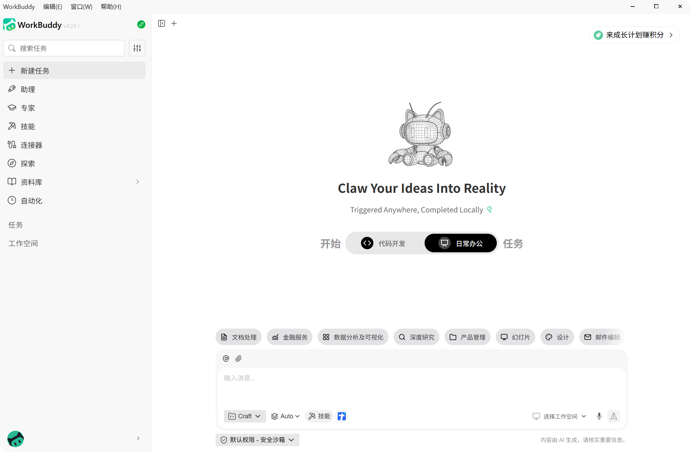
一键调用 AI 专家团队
把岗位经验封装成可复用的能力包
什么是 Expert？
预配置 AI 团队模板——把领域知识、操作规范、输出格式预先打包。左侧栏一点即用，无需每次重新讲规则。
实例：学术研究套件
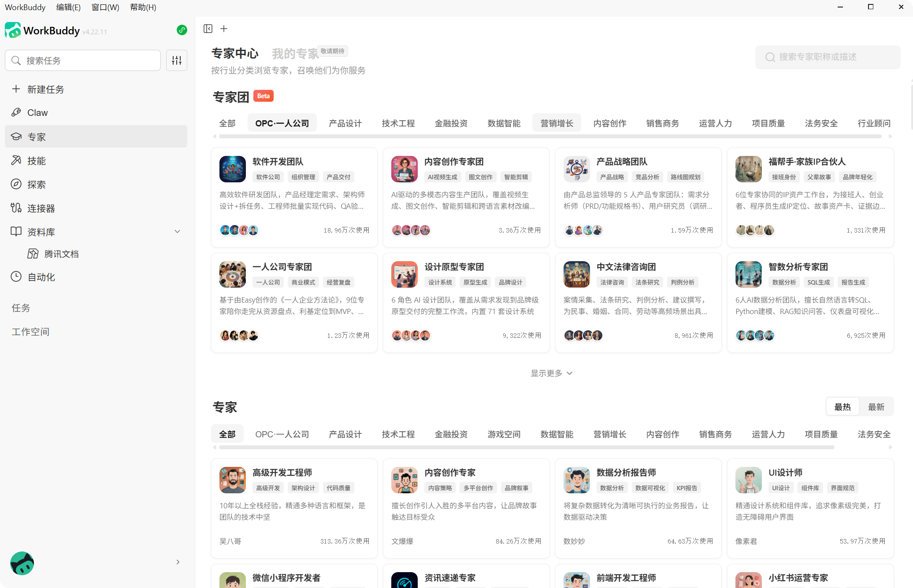
安装一个包 = 学会一门专业
技能市场收录过万 · 覆盖全场景
什么是 Skill？
独立工作流包 = 专业知识 + 操作规范 + 输出模板。安装即用，无需配置。类比手机 App——装一个"临床药学" Skill，AI 就懂药学。
内置 20+ 技能 · 市场过万
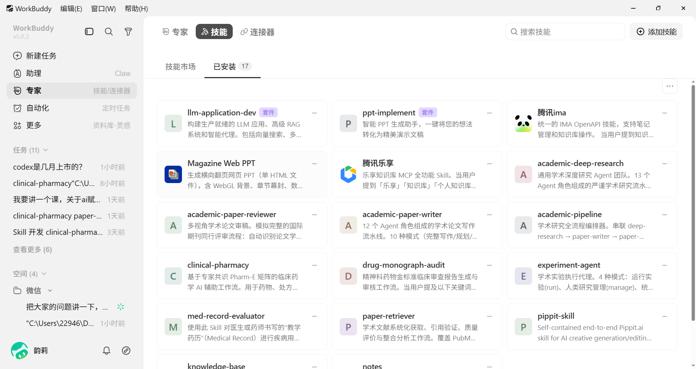
让 AI 从你的资料里找答案
MCP = Model Context Protocol · 统一连接标准
IMA 知识库
上传指南/说明书/处方集
RAG 实时检索
引用原文回答
GitHub
代码仓库连接
自动拉取技能更新
项目管理
腾讯文档
在线协作文档
AI 辅助写作/表格/PPT
团队共享
Craft · Plan · Ask
不是"一种 AI 做所有事"——而是三种模式，按需切换
Craft
你说我做
Plan
先想后做
Ask
只聊不干
ima.copilot
以知识库为核心的 AI 工作台 · 搜读写一体
📚 公用知识库
发现广场搜索别人已建好的知识库，一键加入即用。医学/药学/编程/法律……覆盖广泛，省时省力。
🔒 个人知识库
自建私有知识库。上传指南 PDF、药品说明书、处方集——仅自己可见，安全可控。
👥 共享知识库
创建后邀请成员加入，设置查看/编辑权限。科室共用，团队协作。
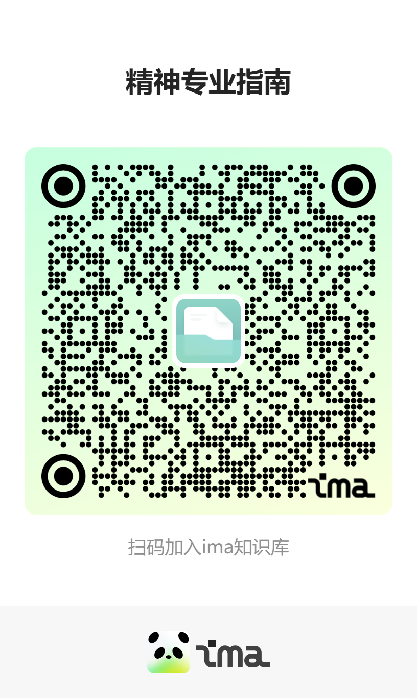
三步拥有自己的 AI 知识库
电脑访问 ima.qq.com → 下载桌面客户端 → 扫码登录 → 开始搭建
创建知识库
上传资料
连接 WorkBuddy
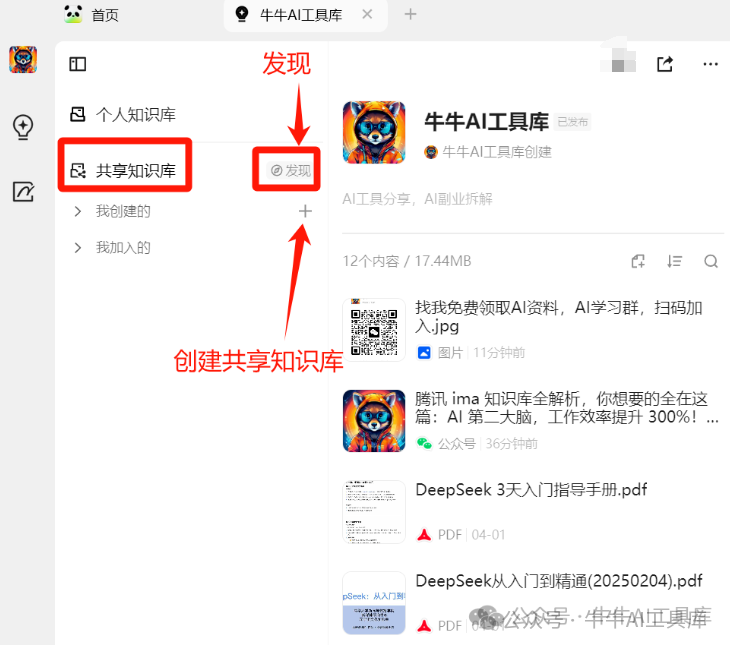
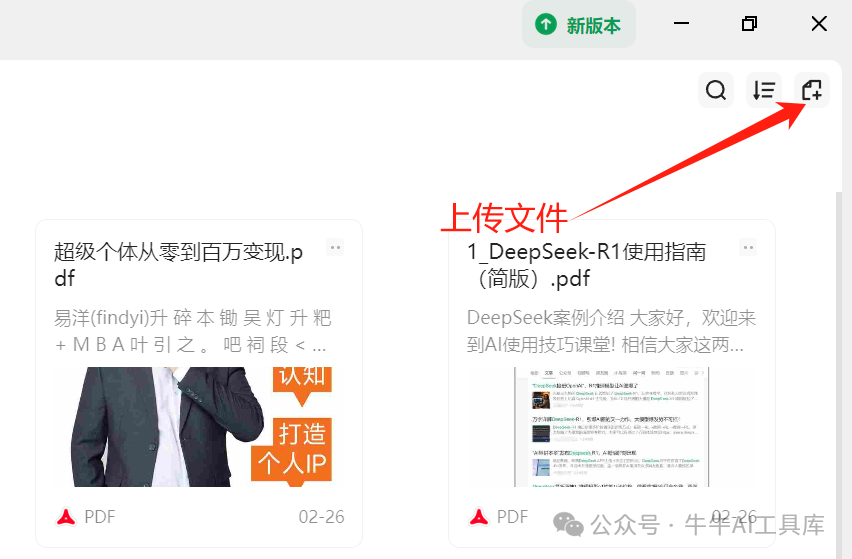
RAG vs 传统 AI
检索增强生成 — 每次提问都实时从知识库中查答案
❌ 传统 AI（模型"背"知识）
✅ RAG（实时"查"答案）
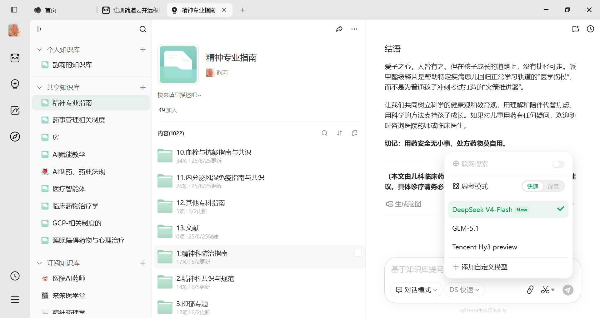
基于知识库的 AI 对话
提问 → 检索知识库 → 引用原文 → 给出有据可查的回答
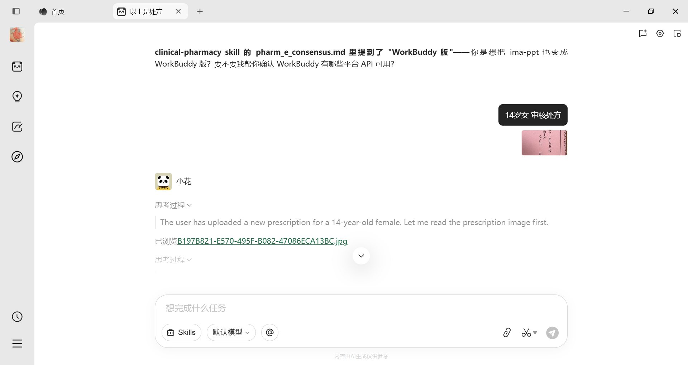
WorkBuddy + IMA = 完整的 AI 工作台
实现日常质控工作台的设计——精心方衡
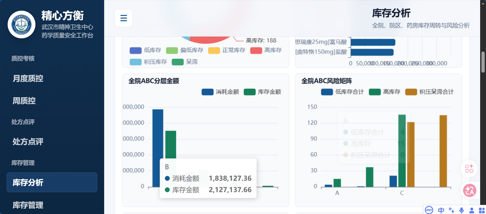
什么是 Skill？
独立工作流包 = 专业知识 + 操作规范 + 输出模板。安装即用，像手机装 App。
🏥 clinical-pharmacy
🎓 workbuddy-ars

clinical-pharmacy
v2.2.2 · 基于专家共识 Pharm-E 框架
核心能力
设计来源
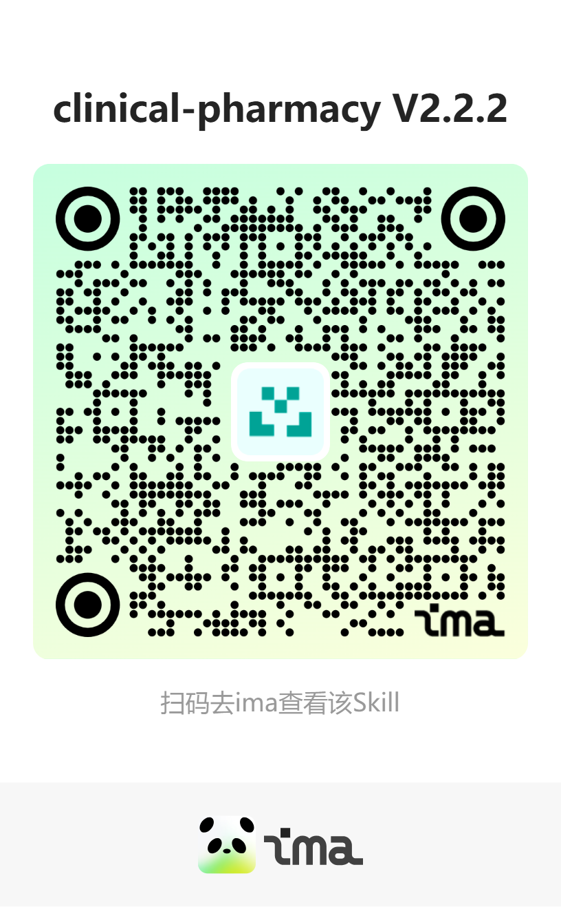
5 份核心文献打底
不是凭空设计——每一步都有出处
📄 3 篇 AI/LLM 论文
📋 4 份国家卫健委规范
🧠 1 份精神科专项
P H A R M E
六元素定义
多学科专家共识 2025（共识度 96%-100%）
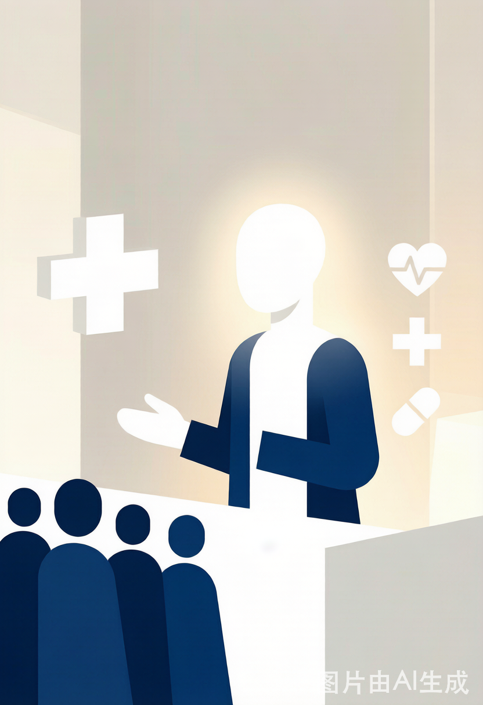
Purpose 任务目的
最终价值导向，不是具体操作指令
Healthcare Context 场景背景
脱敏患者信息/处方/检验/目标受众
Abstract 任务摘要
宏观目标→具体动作+行为边界
Role 角色定位
引导术语但不必要·角色是风格
Methodology 方法路径
拆解为可执行步骤+中间产物
Evidence/Ethics 循证+伦理
E1证据层级·E2不替代处方权
5 场景 × 6 元素
专家共识 2025 — 不是六个全用，不同场景按需组合
| 场景 | 推荐元素 | 共识度 | 典型任务 |
|---|---|---|---|
| 药学服务 | P+H+A+R+M+E | 96.55% | 处方审核·药物重整·用药咨询·TDM·药学会诊 |
| 药学教育 | P+H+A+R+E | 100% | 虚拟仿真教学·虚拟标准化患者·带教反馈 |
| 药学科研 | P+H+A+R+M+E | 100% | 文献综述·研究设计·数据分析·论文润色 |
| 药事管理 | P+H+A+R | 100% | 制度管理·药学信息·药品供应·临床用药 |
| 药学科普 | P+H+A+R+M+E | 100% | 科普选题·公众用药教育·风险沟通 |
5 种技巧 ↔ 6 元素
Pharm-E 决定有哪些要素 · 技巧决定如何推理和组织输出
| 任务特征 | 技巧 | 执行要点 | 映射元素 |
|---|---|---|---|
| 快速查询/基础问答 | 零样本 | 隐式映射 Pharm-E，不机械输出六段；涉剂量/禁忌时保留 E 安全核验 | P/H/A |
| 固定格式/模板输出 | 少样本 | 1-3 个示例约束格式；不要让示例覆盖患者个体化信息和证据边界 | P/H/A |
| 审方/DDI/监护分析 | CoT | 信息提取→风险识别→证据匹配→建议生成；只输出可复核的结论和依据 | M |
| 多方案比选/疑难会诊 | ToT | 并行比较·收敛为推荐/备选/不推荐；兼顾有效性+安全性+可及性 | M |
| 需检索指南/证据 | ReAct | 先检索再整合，标注来源/检索时间；可叠加 CoT 或 ToT；高风险判断不能只靠模型记忆 | E(强制) |
按需加载 · 路由驱动 · 专科定制
不是把所有知识一次喂给 AI — 按任务动态加载，节省 60-80% 上下文
按需加载
任务路由总表
精神科专用路由
评价测试用例
不猜测 · 不编造 · 可追溯
从输入到输出的四道防线
FUTURE-AI 六原则
最低信息清单（输入防漏）
统一证据引用（输出防编）
11 专科监护覆盖
AI 辅助处方审核
CoT 分步推理 + ReAct 检索验证 = 可追溯的审核结论
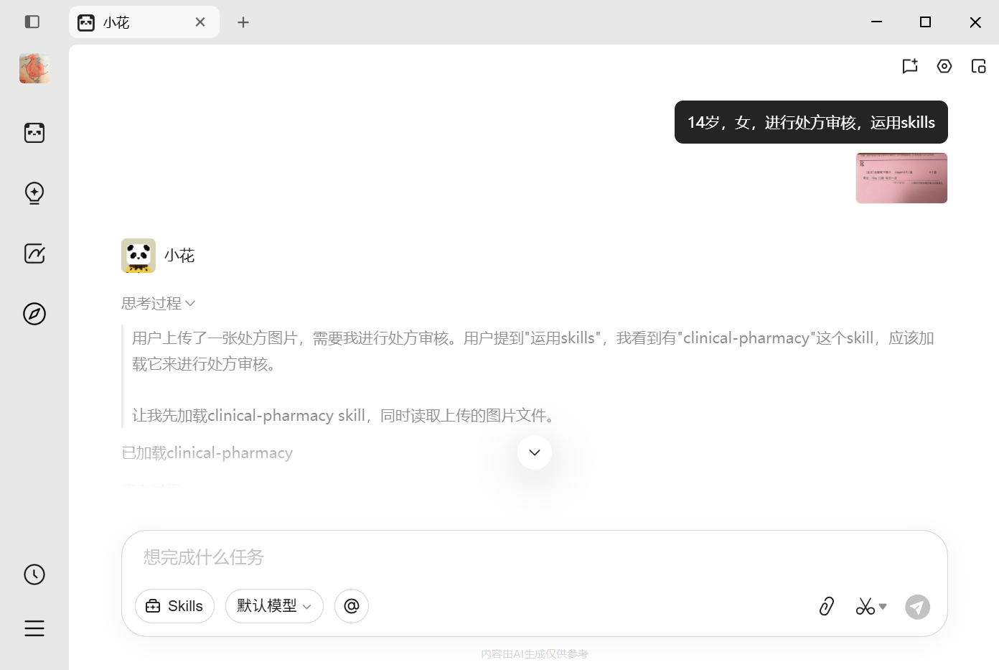
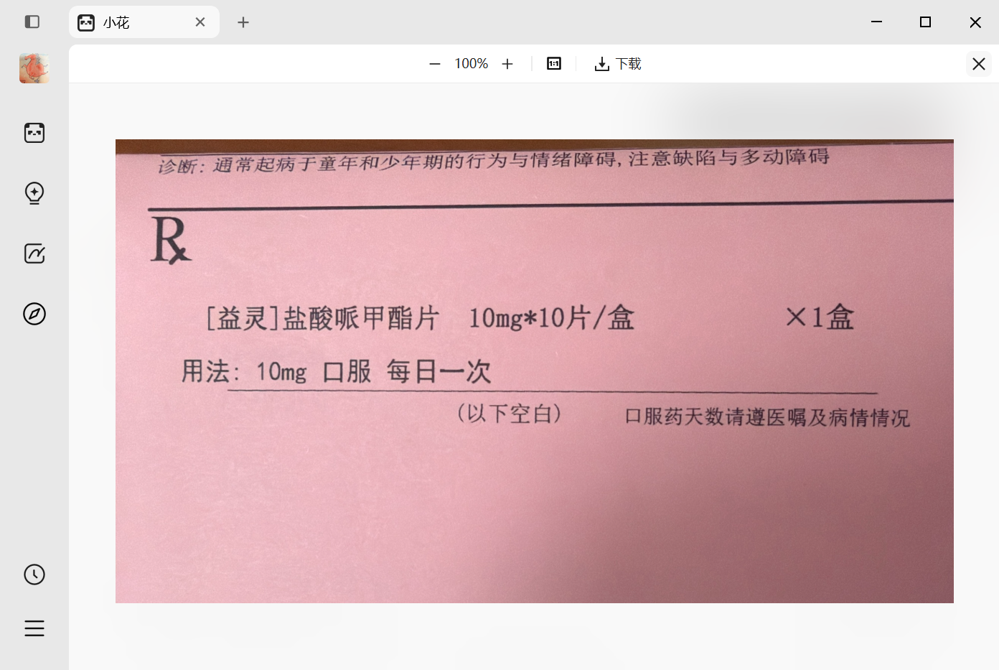
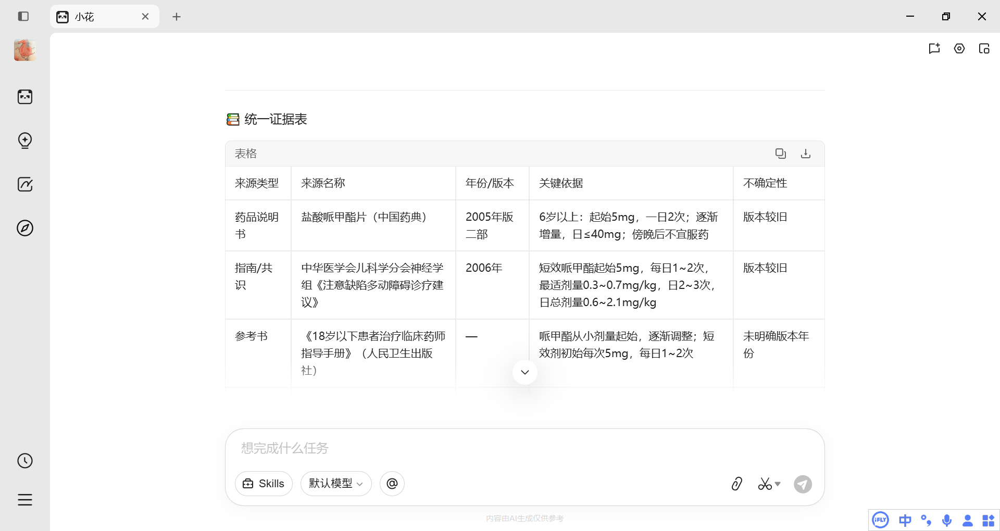
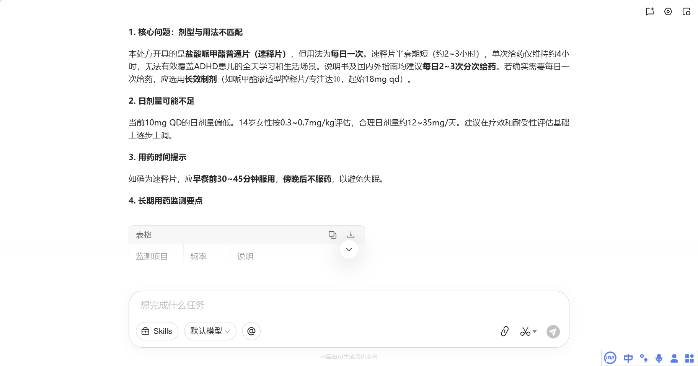
SOAP 格式监护记录
基于 Pharm-E 元素 + IMA 知识库检索 + CoT 分步评估
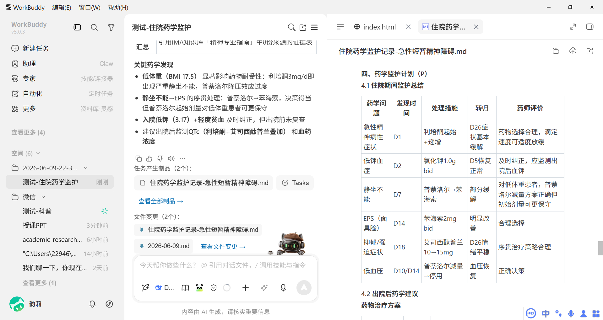
"聪明药" 警示科普
IMA 生成科普海报 + WorkBuddy 生成科普视频 · 30 分钟完成全流程
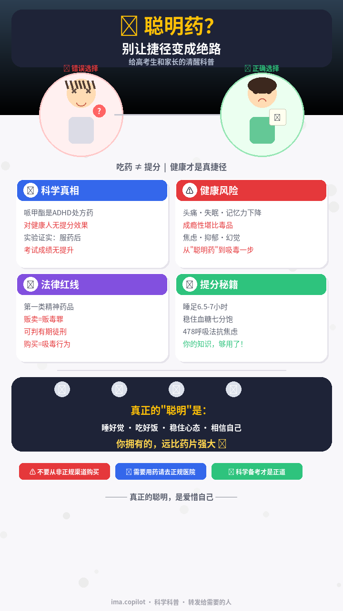
Academic Research Skills
从 Claude Code → WorkBuddy
26,500+ GitHub 星 · 一整天适配 · 覆盖率 15% → 94%
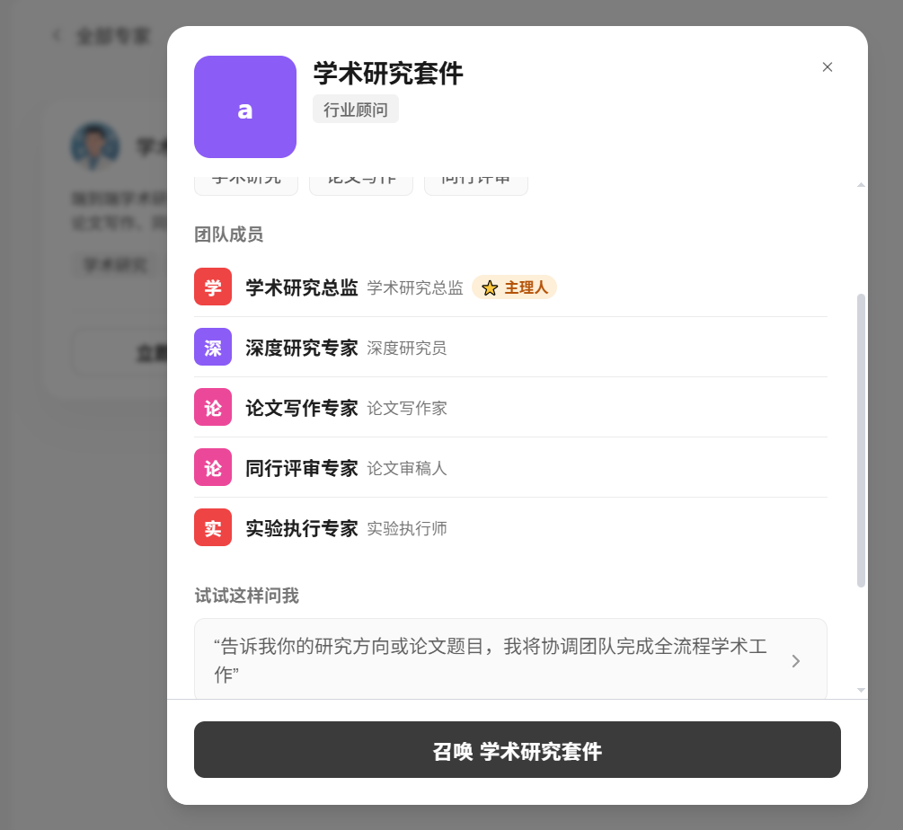
保留设计意图 · 重写每一层实现
学术研究流水线
四个 Skill 串联，不是各自孤立 —— 研究 → 写作 → 审稿 → 修订 → 定稿
Deep Research
Paper Writer
Paper Reviewer
Academic Pipeline
学术安全底线
为什么这个项目值 26,500 星？—— 不是功能全，是把底线写进了系统
Copilot, not pilot
每个关键节点需用户确认才能推进，不能丢任务让它自己跑十分钟
强制 Integrity Gate
7 种 AI 失败模式检查 · 检出伪造直接拒绝输出
魔鬼代言人
内置让步阈值 · 反驳低于 4 分不让步 · 追踪让步率
引用自动验证
三 API 交叉验证 · 找不到的标红 · 拒绝未验证引用入列
风格校准 + Material Passport
学你的句式偏好 · append-only 追迹账本 · 断点续传 — 每一步都有据可查
从 Claude Code 到 WorkBuddy
不是翻译，是重建 — 保留设计意图，重写每一层实现
| Claude Code | → WorkBuddy | 方法 |
|---|---|---|
| Agent 自动并行 | Agent 工具 + agent_teams.json | 14 组模板·标记并行/顺序 |
| Pre/PostToolUse Hook | hooks.py + 用户检查点 | 7 模式检查·语义完全一致 |
| SlashCommand | YAML 触发词 | 97 个中英文·+ $suite 别名 |
| Semantic Scholar API | OpenAlex+CrossRef+S2 三角 | 三索引·+ SQLite 缓存 |
| 自动流水线推进 | planner.py + 手动确认 | 闸门一个不少·用户确认换自动 |
覆盖率 15% → 94%
17+ 轮迭代 · 从 "跑不起来" 到 "完整可用"
托鲁地文拉法辛剂量-效应 Meta 分析
8 图 4 表自动生成 — PRISMA · 偏倚风险 · 森林图 · 安全分析
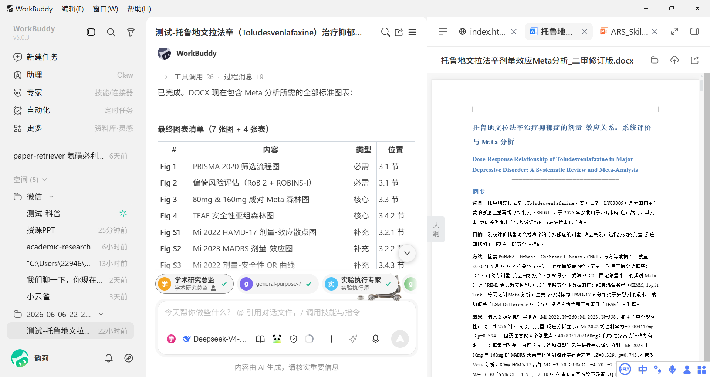
AI 科普视频 & 数字人
当前限制 + 可行路径 + 工具对比
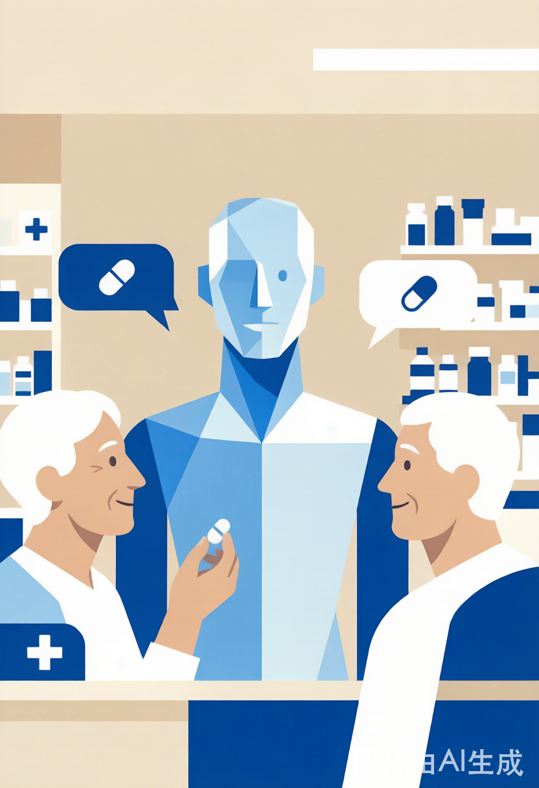
11 个问题 → 10 个已落地
日常 2/2 ✅ · 知识管理 3/4（数字人待探索）· 科研 6/6 ✅
处方审核
CoT 8步+证据表
图片识别
ReAct多点验证
知识库
IMA双库+RAG
科普视频
少样本+多模态
数字人
开源+收费方案
文献检索
IMA+ReAct+裁决
病历数据
7类模板+SOAP
课题申报
ARS深度研究
中英翻译
术语一致+双语
辅助选题
ToT+ReAct
ML/预测
Python环境
待探索
工具链路还需完善
一个平台
一个知识库
两个技能
平台+知识库+技能
WorkBuddy+IMA+双Skill=完整工作流
学会看、改、测、用
任何GitHub技能都可转化为WorkBuddy版
数字人还需探索
开源+收费方案已列出·等更好的国内方案